Estudiante interesado en el desarrollo web y las tecnologías digitales.
Esta página fue diseñada como un proyecto universitario enfocado en crear una interfaz simple, moderna y optimizada.
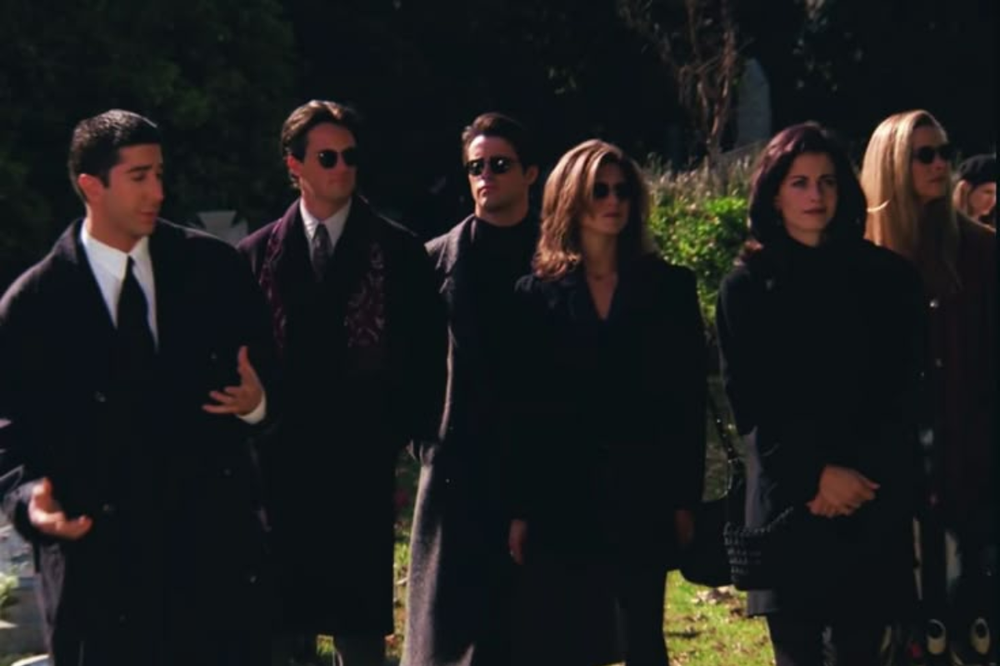
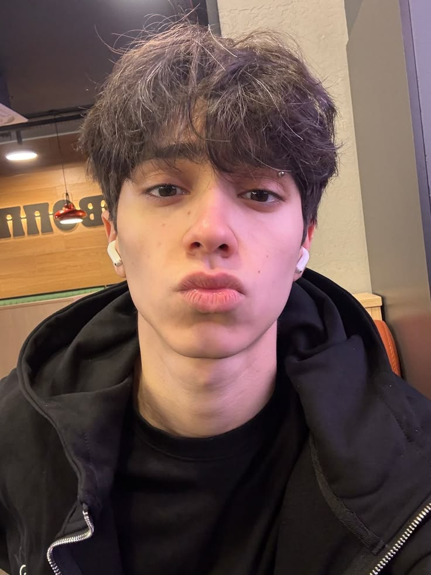
Estudiante interesado en el desarrollo web y las tecnologías digitales.
Esta página fue diseñada como un proyecto universitario enfocado en crear una interfaz simple, moderna y optimizada.
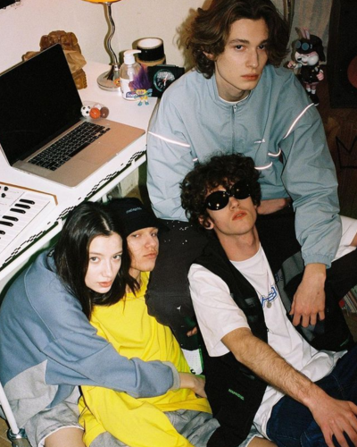
Apacionado por la Calistenia y el deporte
Por qué este Desafío no es solo un aprendizaje, es un despertar Mental.
La programación como medio de construcción digital, el Aprendizaje constante como mentalidad de crecimiento
y el Diseño de ropa como una forma de creatividad y identidad.
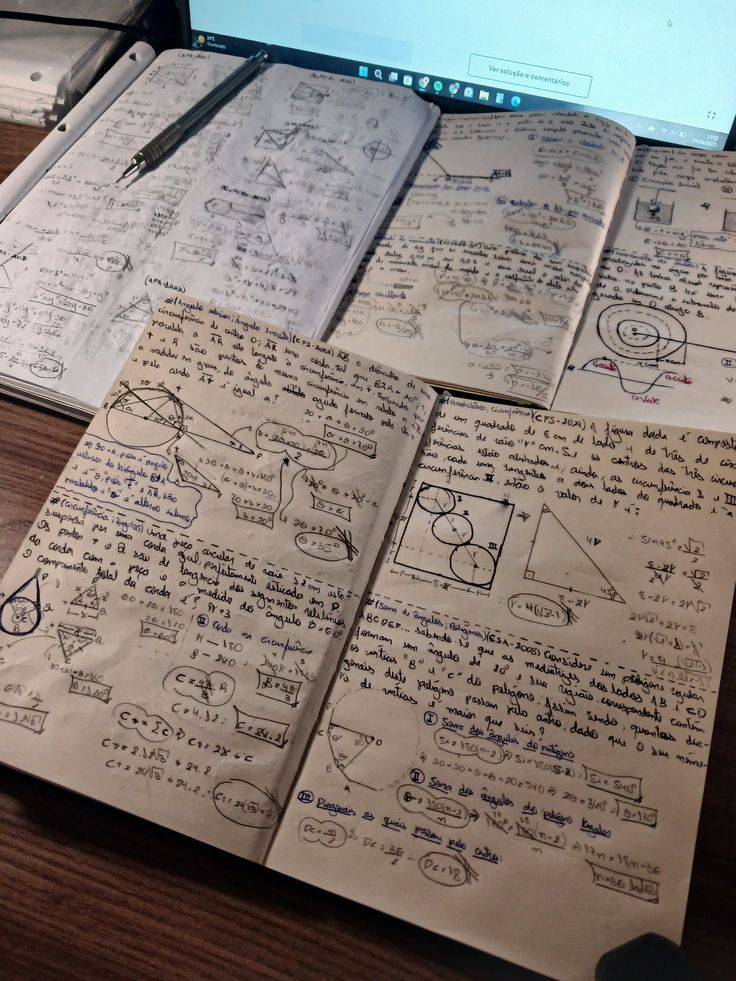
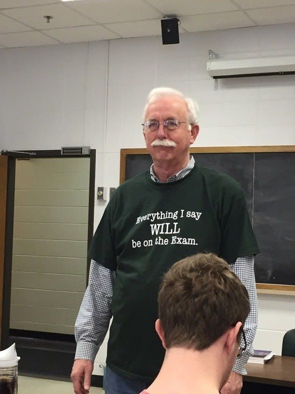
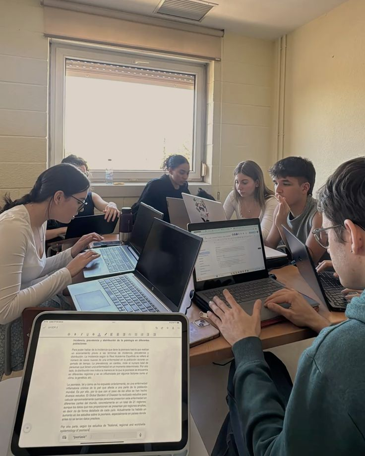
Esta carrera me ha permitido Explorar áreas relacionadas con lógica, desarrollo digital y Programación, fortaleciendo mi Visión orientada a la tecnología y al diseño de interfaces Modernas.
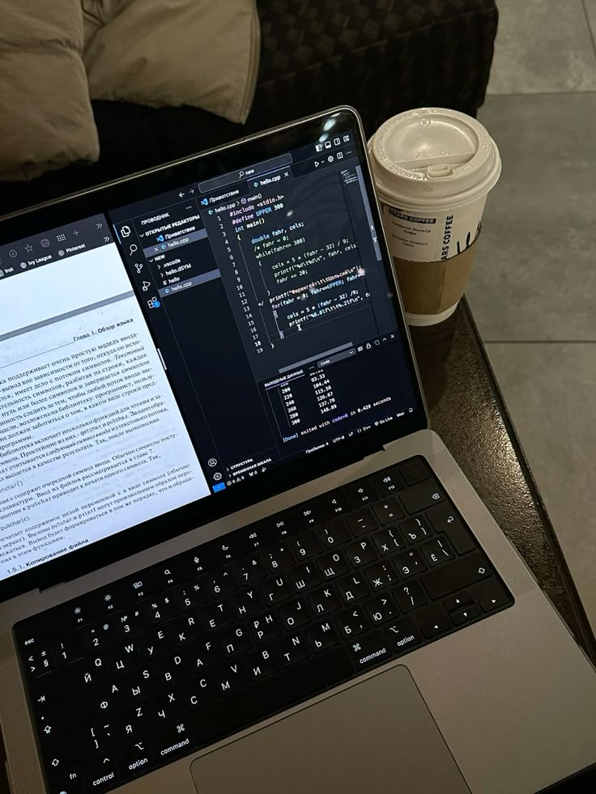
Mi objetivo es seguir aprendiendo, mejorar Constantemente y convertir las ideas en experiencias visuales que transmitan Creatividad, innovación y una Identidad propia dentro del entorno digital
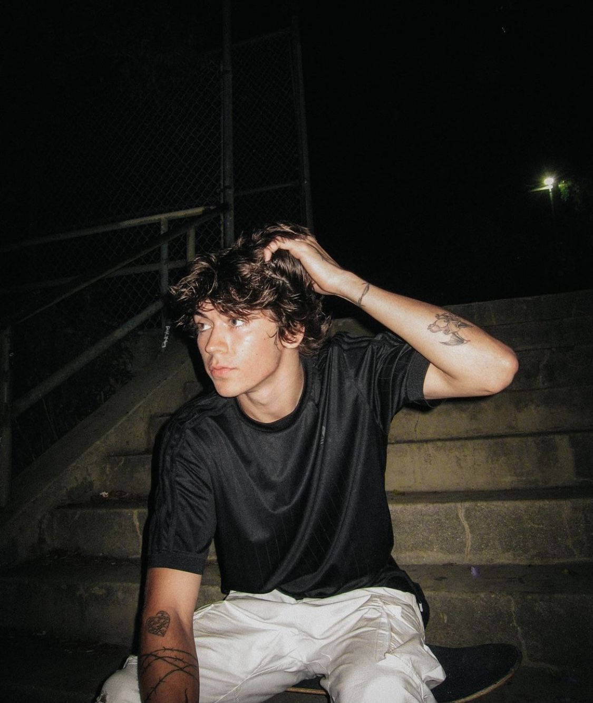
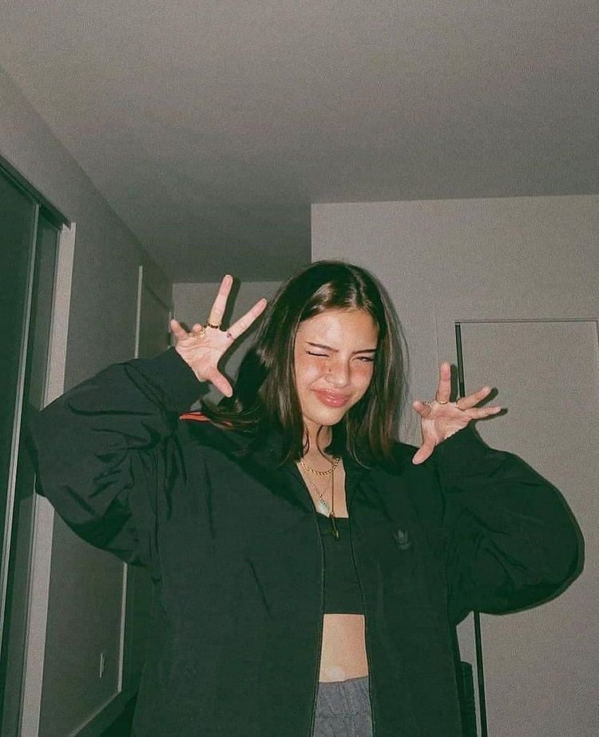
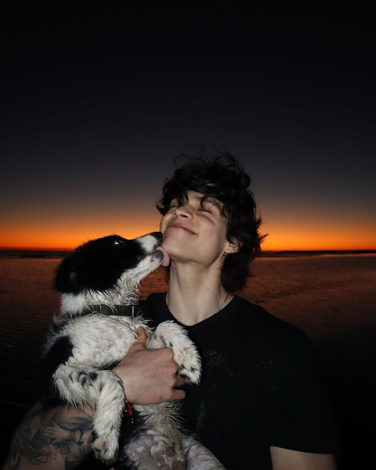
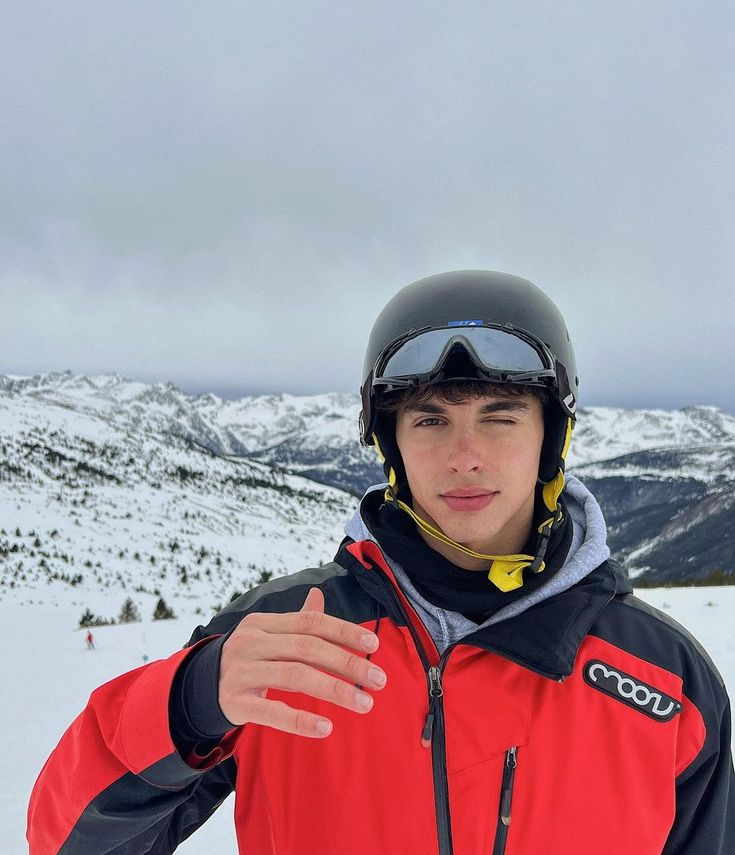
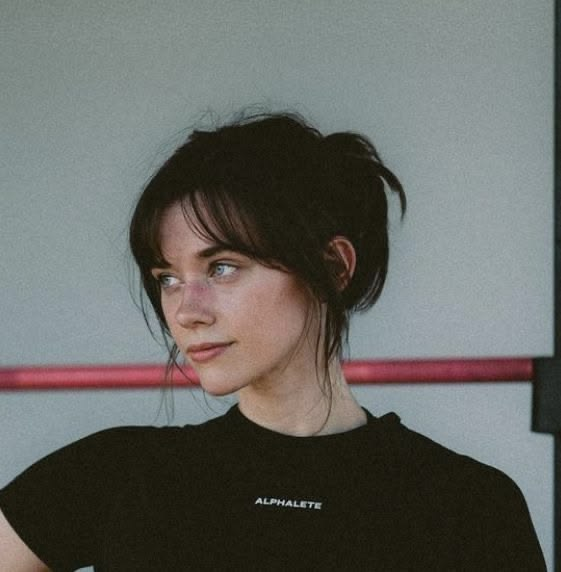
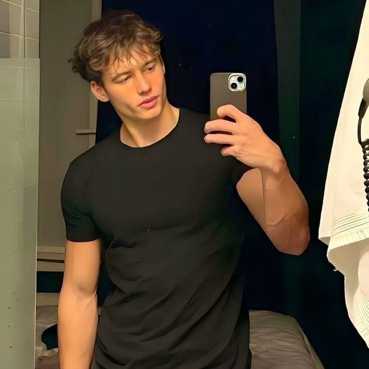
Estás aquí porque algo dentro de ti ya no tolera la Mediocridad
Cada sección de este proyecto refleja una etapa de Aprendizaje, donde la Creatividad y la tecnología se encuentran para dar forma a nuevas Ideas.
No todo sera facil, pero Siempre tendras alguien a tu lado
Escribeme Ahora, para no ser un espectador, sino un Protagonista